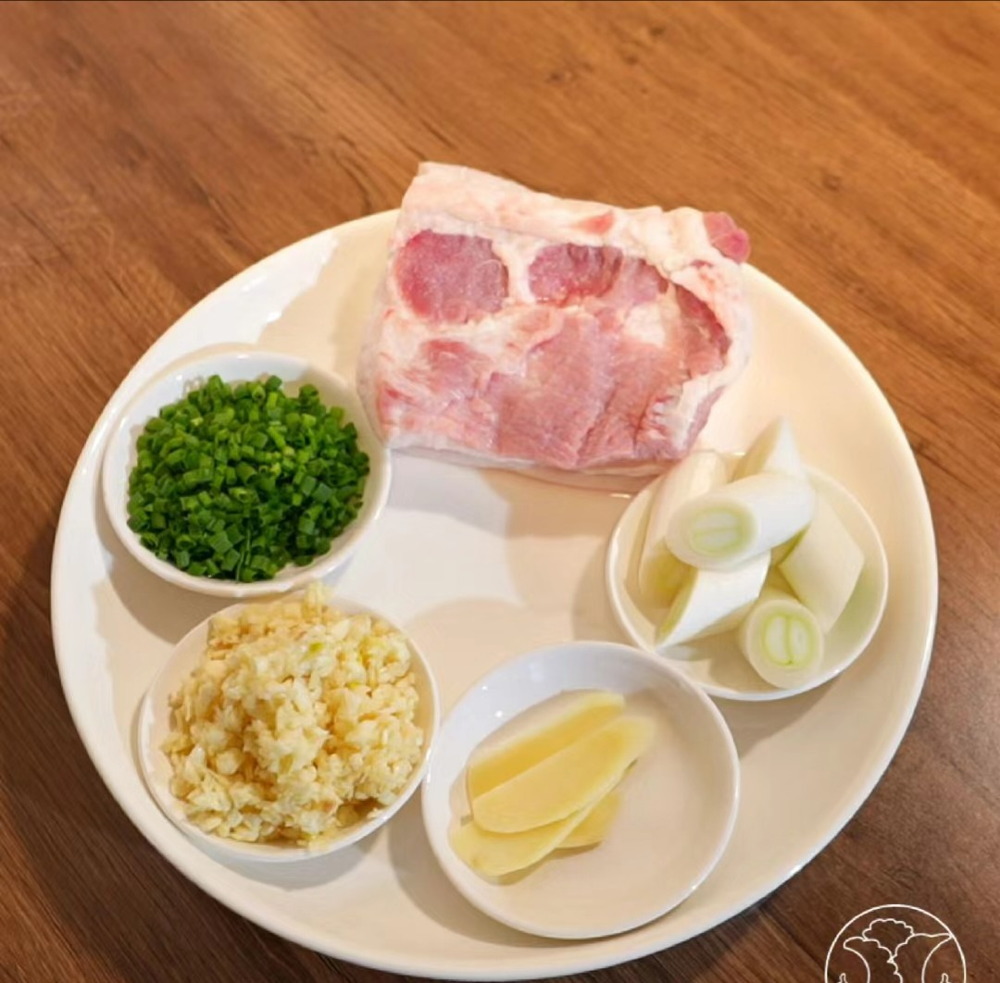
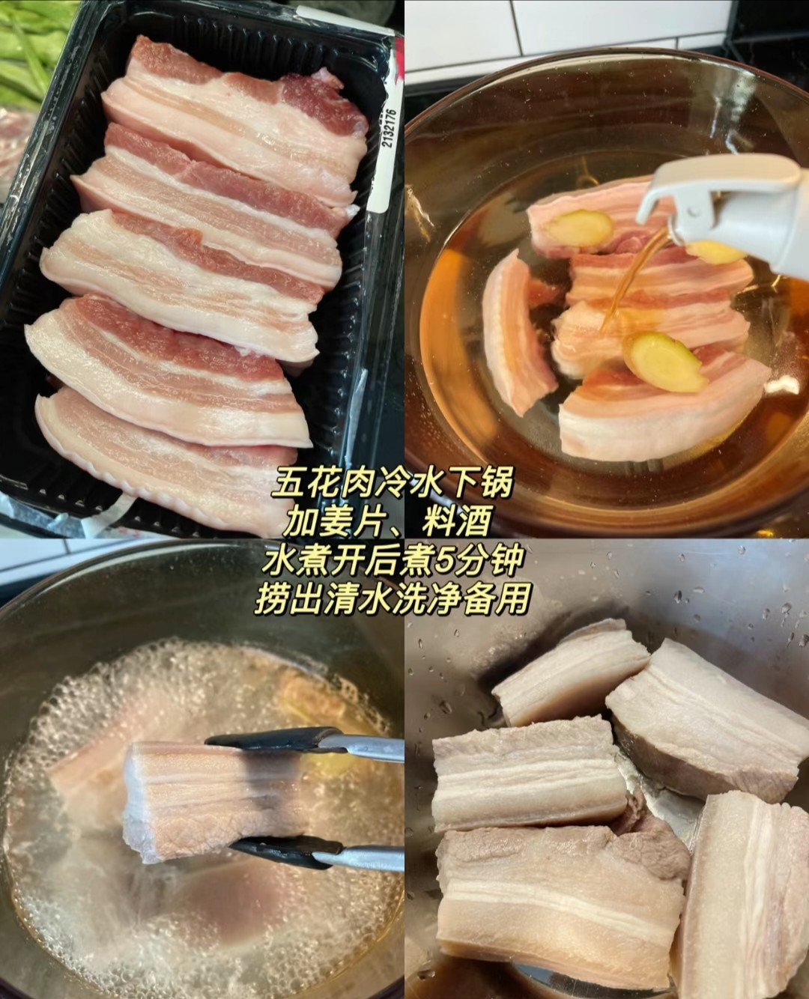
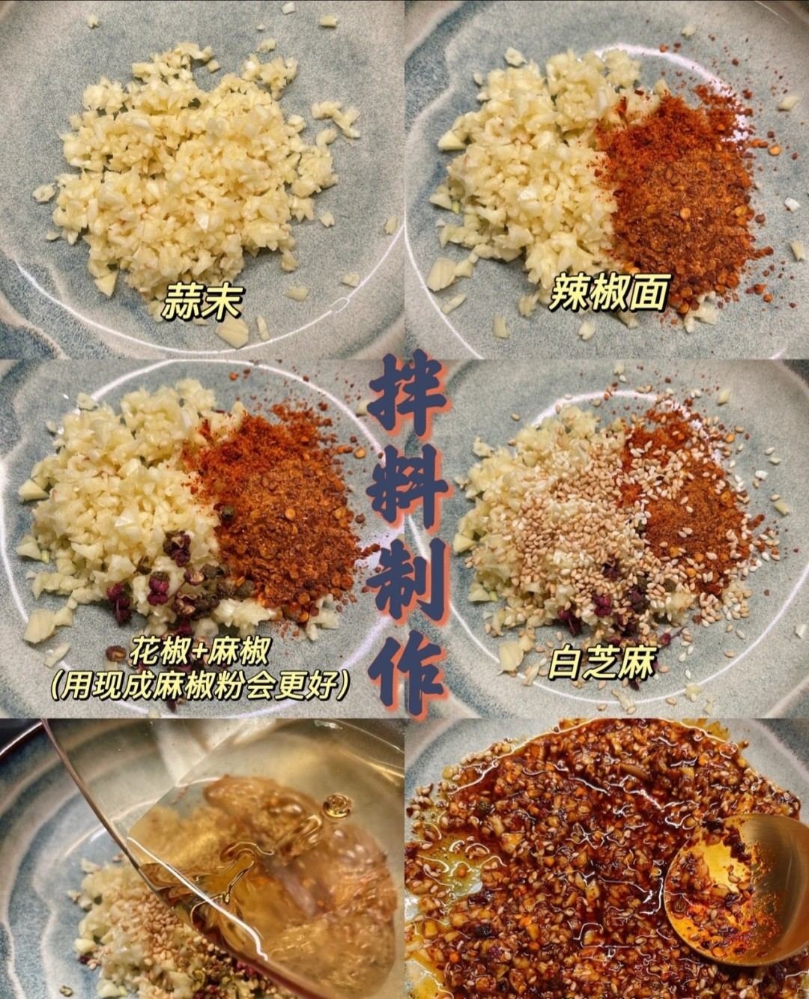
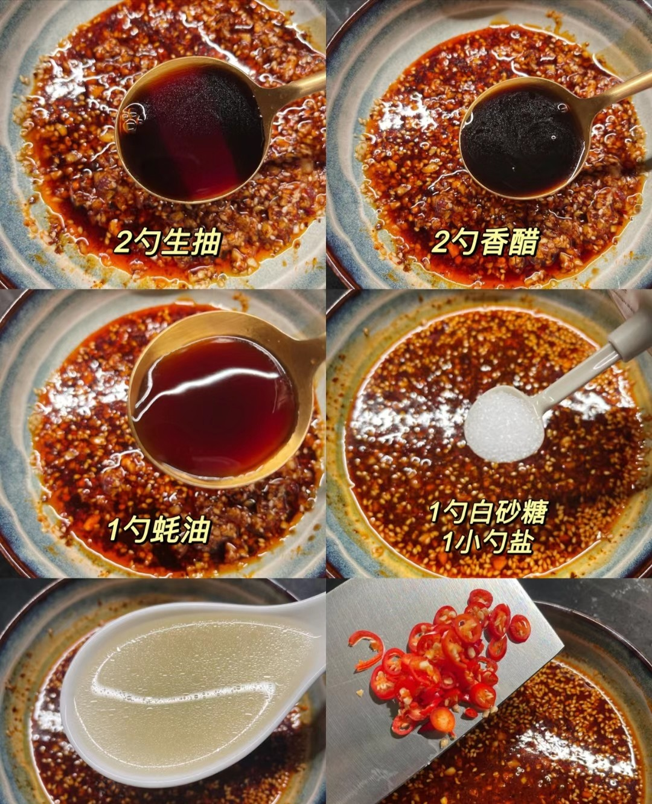
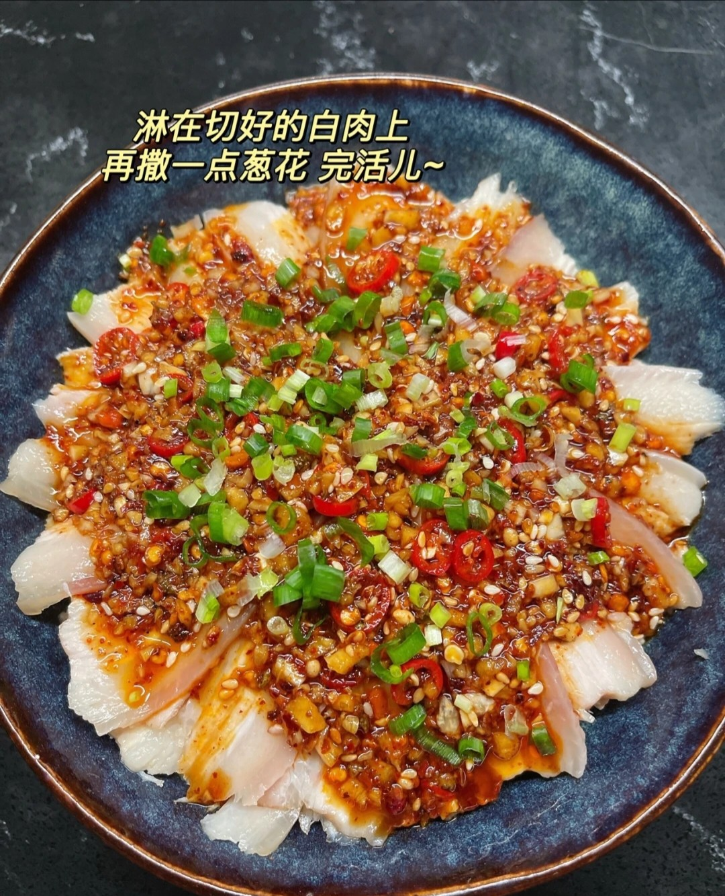

简单美食教程->麻婆豆腐

1.备好材料:大块五花肉（大口吃肉）、姜片、大葱段、小葱段、蒜泥

2.五花肉冷水下锅加姜片，料酒（花椒）煮熟后捞出放凉切成薄片，不爱吃肥肉的可以切薄一点

3.灵魂料汁：蒜末、辣椒面、花椒（粉）、麻椒（粉）、白芝麻，淋上热油搅拌均匀

4.继续：加入两勺生抽、两勺香醋、一勺耗油、一勺白糖、一小勺盐、一勺煮肉原汤，适量小米辣，搅拌均匀，完成
将切好的肉片一片压着一片围成圆形摆放，将料汁从中间淋下，最后撒上一把万能的葱花，完成

回到首页
or
点这里->结业报告
上一个在这->椒盐土豆